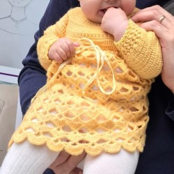
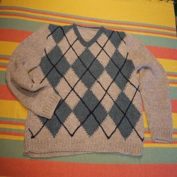
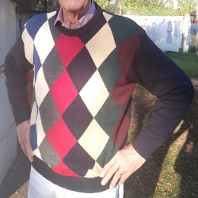
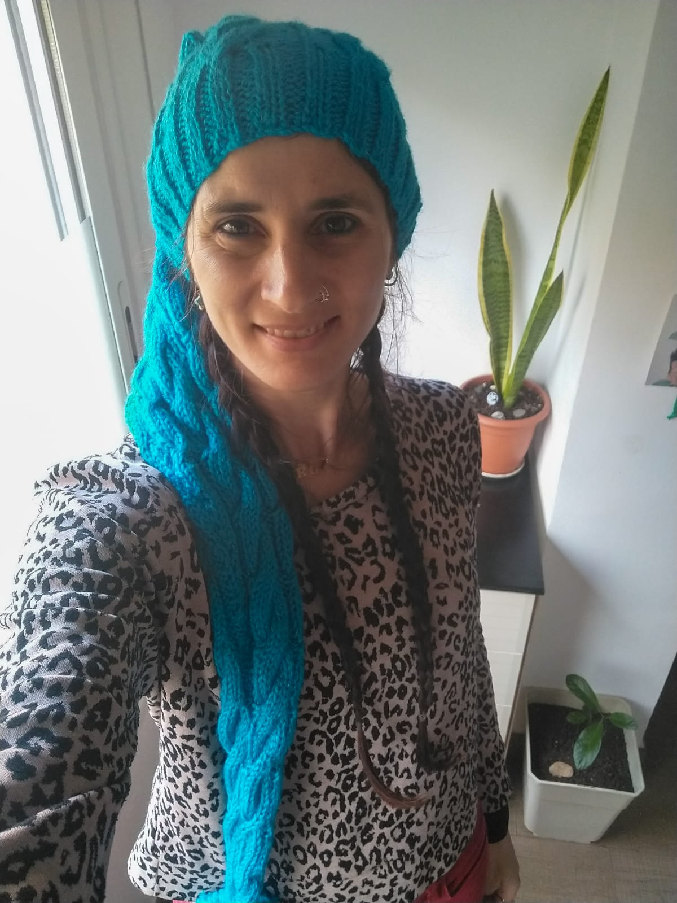

Artesanal
Hecho a mano
Con lanas seleccionadas y terminaciones cuidadas.
Inspiración
Selección de prendas y detalles del proyecto original, reorganizados con una estructura responsive.

Artesanal
Con lanas seleccionadas y terminaciones cuidadas.

Cardigan
Cuello ancho, buen largo de mangas y un estilo formal confortable.

Cuello cerrado
Geometría y color en una prenda abrigada.

Relieves
El volumen del punto se convierte en parte del diseño.